For any support please don't hesitate to contact us at
Support Center. We provide 13 hours real-time support for our
customers.
We would like to thank you for choosing Pixora - Digital
Agency & Creative Portfolio NextJs Template.
Getting started
The template is easy to customize, ensuring a unique and
professional look for your business. Get ahead of the
competition and stand out in the market with our NextJs
template for businesses.
Template Features
React JS
Next JS
Typescript
Bootstrap v5.x
Gsap Animation Included.
Scroll Animation Included.
Hover Animation Included.
Split Text Animation Included.
Scroll Magic Animation Included.
Hover Effect Animation Included.
19+ Home Page (Dark and Light)
Responsive Design
Pixel Perfect Design
Clean Code & Unique Design
Easy to Customize
Validation form react-hook-form
What's Included
After purchasing Pixora template on themeforest.net with
your Envato account, go to your Download page. You can
choose to download Pixora template package which
contains the following files:
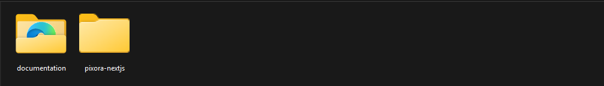
The contents of the template package downloaded from
ThemeForest
Pixora NextJs - An Nextjs Template
file. this file you can edit and use for your
business.
Documentation - This folder
contains what you are reading now :)
React Installation
Please follow the instructions.
For local host: -
Open you command prompt
npm install or npm install --legacy-peer-deps
npm run dev (will start the dev server at
http://loaclhost:3000)
To deploy a Next.js application on Vercel, you
can follow these steps:
-
Sign up for an account on Vercel if you don't
have one already.
Connect your GitHub, GitLab, or Bitbucket
repository where your Next.js application is
hosted.
Import your repository on Vercel and select the
Next.js project to be deployed.
Vercel will automatically detect your Next.js
application and perform the necessary build and
deployment steps.
Once the deployment is complete, you'll be able
to access your application using the URL
provided by Vercel.
Template Site Setting
Change Site Title, Favicon & Logo
To change the website title, favicon, and logo in
Pixora, open the project in your preferred code
editor and navigate to the main layout and header
configuration files. Pixora uses
Next.js built-in metadata for managing the site
title and favicon, allowing you to update them easily
from a centralized location.
For updating the logo, simply replace the existing logo
image in the assets folder or update the logo path in
the header component. This approach ensures consistent
branding across all pages. Follow the screenshots below
to locate the relevant files and apply your custom
title, favicon, and logo.
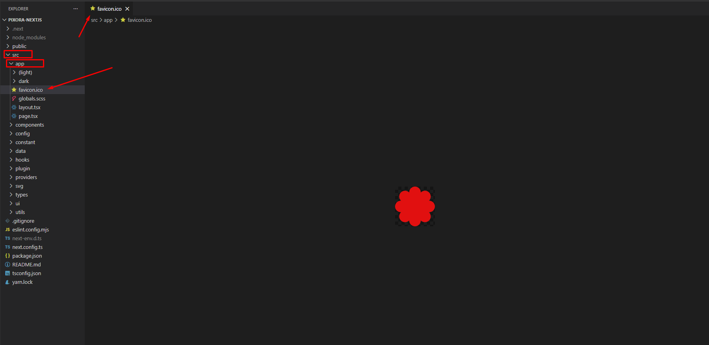
You can change Favicon here
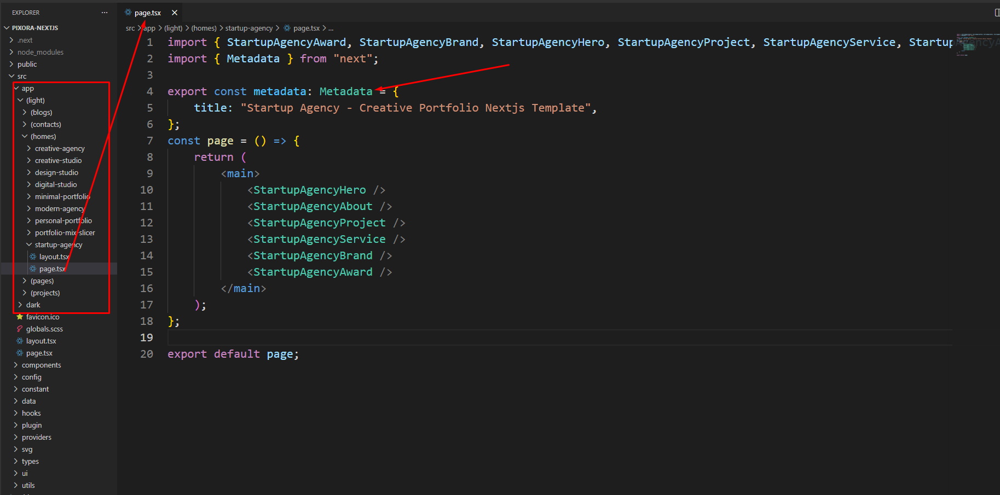
You can change Title here
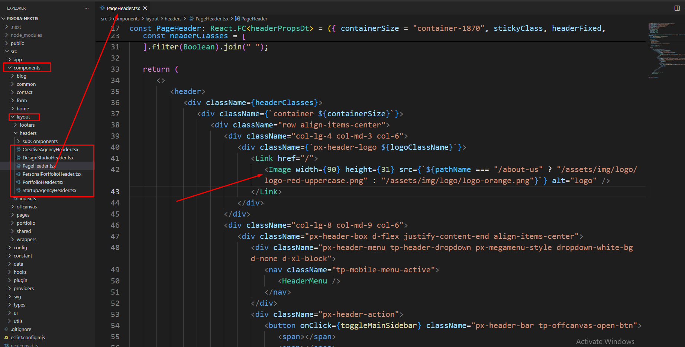
You can change Logo here
Customize Menu
The header menu in this template is fully dynamic and
supports both
Light and
Dark versions automatically. You can
easily customize the navigation items, dropdowns, and
mega menus by editing the menu data files.
From the project folder go to:
srcdataMenuRenderer
Open one of the following files:
menu-light.ts → For Light
version menu
menu-dark.ts → For Dark version
menu
Modify the menu items, labels, links, or mega menu
columns as needed.
How It Works
The template uses a custom React hook called
useIsDarkRoute() to detect whether the current route
belongs to the dark version.
If the current pathname starts with /dark, the hook
returns true. Based on this value, the appropriate menu
data is selected automatically.
"use client";
import { usePathname } from "next/navigation";
export const useIsDarkRoute = () => {
const pathname = usePathname();
// Check if current route is a dark version route
const isDark = pathname?.startsWith("/dark") ?? false;
return isDark;
};
Inside the HeaderMenu component, the hook is used to load
either the dark menu or light menu dynamically.
Routes like /dark,
/dark/digital-studio, etc. will use
menu-dark.ts
All other routes will use
menu-light.ts
Mega Menu Structure
The menu supports Mega Menu layout using columns. Each
menu item can contain:
id – Unique identifier
type – "mega" or "link"
label – Menu text
href – Navigation link
columns – Mega menu column structure
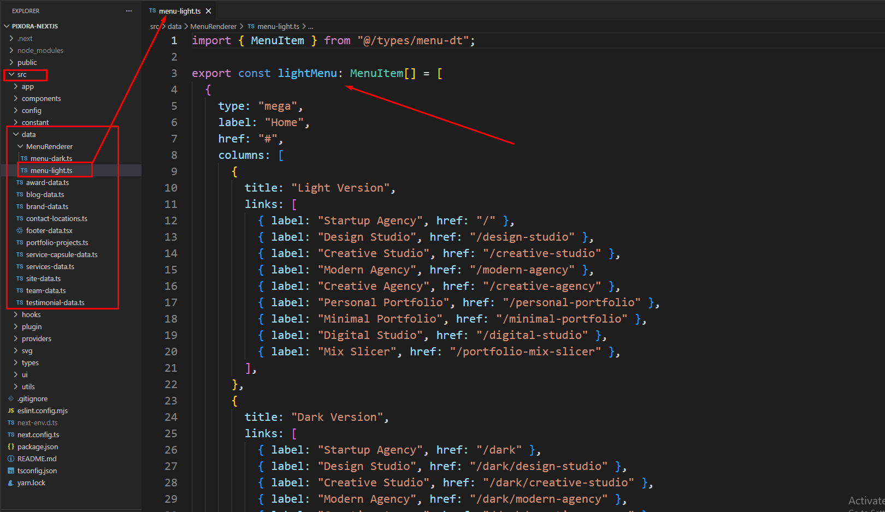
Step 2: Light Menu Structure (menu-light.ts)
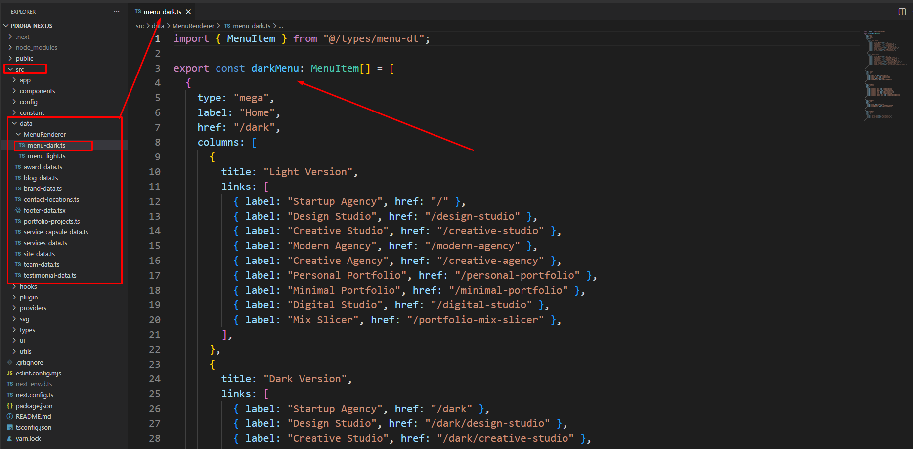
Step 3: Dark Menu Structure (menu-dark.ts)
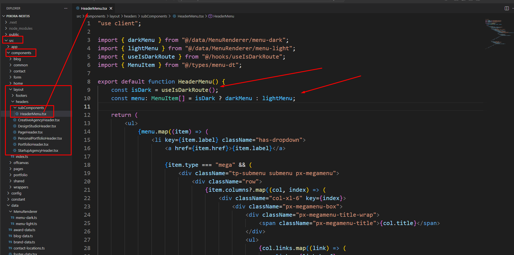
Step 4: HeaderMenu component rendering the dynamic
menu
Dark Version Routing System
This template uses a dedicated
/dark route structure to handle the
Dark version of the website. When a user visits any URL
that starts with /dark, the Dark layout is
automatically activated.
How It Works
Inside src/app/dark/layout.tsx, a special
layout is applied only to Dark routes.
useEffect(() => {
// Add class when entering dark page
document.documentElement.classList.add("pixora-dark");
// Remove class when leaving dark page
return () => {
document.documentElement.classList.remove("pixora-dark");
};
}, []);
When the user enters a route like:
/dark
/dark/about
/dark/digital-studio
The "pixora-dark" class is
automatically added to the
<html> element. This activates all
dark-mode styles globally.
When the user navigates away from the dark route, the
class is automatically removed.
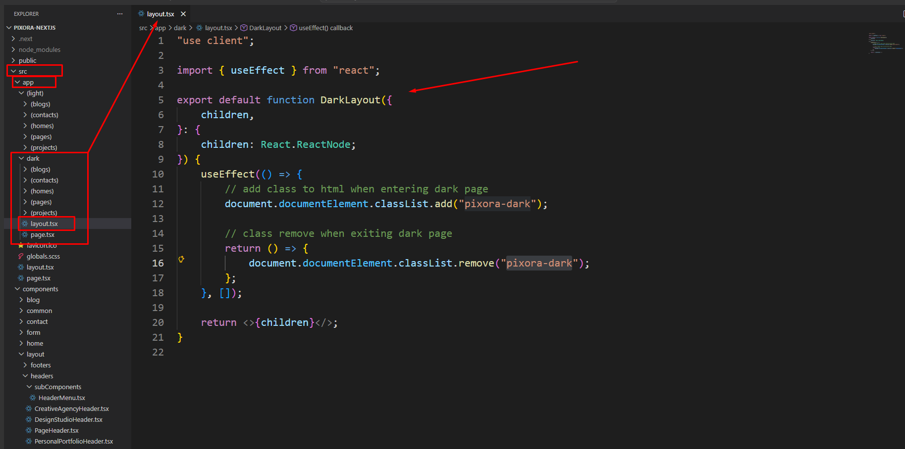
Dark layout structure inside /app/dark
SmartLink Component (Automatic Dark Link Handling)
To ensure smooth navigation between Light and Dark
versions, this template includes a custom
SmartLink component.
SmartLink automatically adjusts internal links based on
the current route.
What SmartLink Does
If the user is inside a Dark route, all internal links
automatically prepend /dark.
If the user is inside a Light route,
/dark is removed automatically.
External links (starting with http) remain unchanged.
From the project folder go to
src componentslayoutFootersOpen the footer you want to use
Then customize the footer
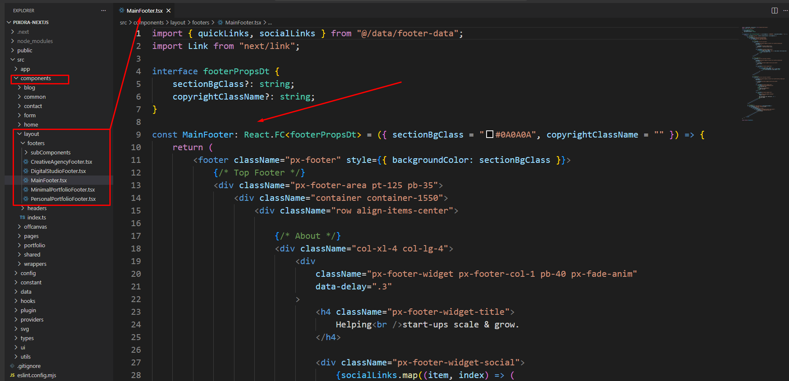
Customize the footer
GSAP Animation
How I Used Hook and Component
I implemented a reusable React hook to handle all
GSAP animation logic (such as fade-in, split text, and
scroll-trigger effects) for a cleaner and more
maintainable codebase. The
AnimationWrapper component dynamically maps
animations based on the current
pathname using the centralized
animationConfig.ts file. This ensures that
only the animations relevant to the active route are
executed. Additionally, the wrapper intelligently
manages both SSR and CSR rendering
contexts, preventing unnecessary client-side rendering
and improving overall performance.
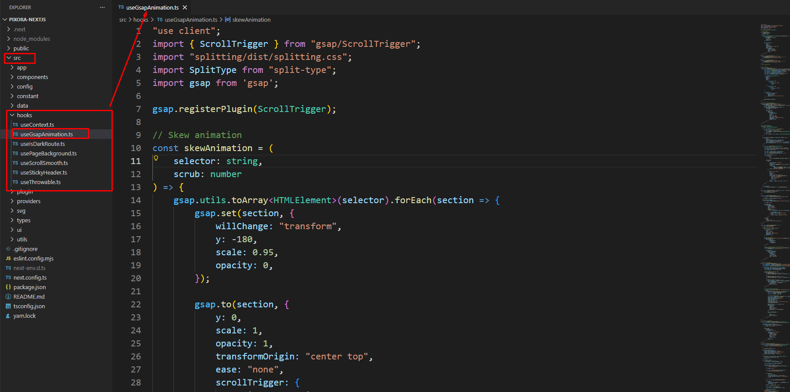
Example of creating animation with hook (fade
animation, split text, scroll trigger setup)
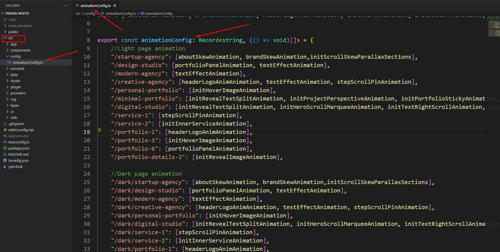
Example of using route-based animations inside a
component with useGSAP and a
custom hook.
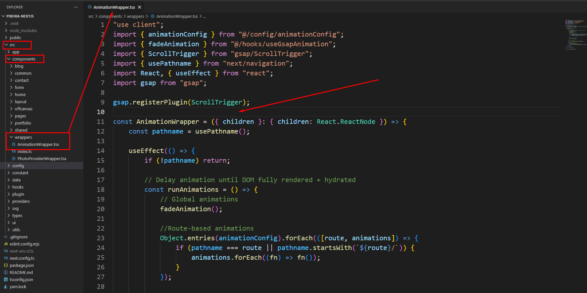
Example of using route-based animations inside
a React component with useGSAP and
a custom hook, combining global and
page-specific effects.
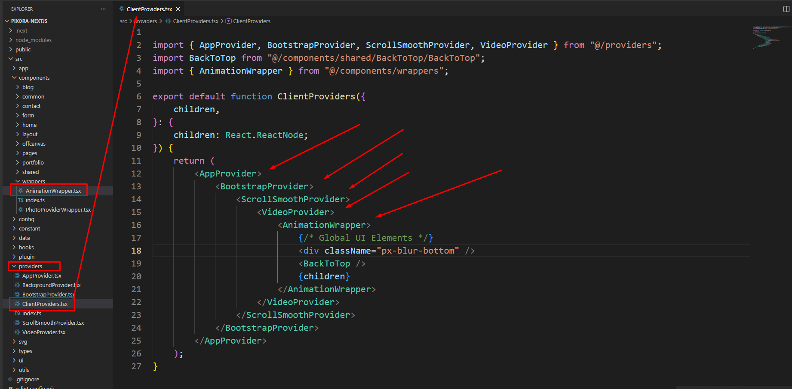
Example of using the animation wrapper that handles
both global and page-specific GSAP animations
using useGSAP and a custom hook
404
To change 404 and setting you can change by following
this screenshot here.
From the project folder go to
src appnot-found.tsxOpen the page you want to use
Then customize the 404 data
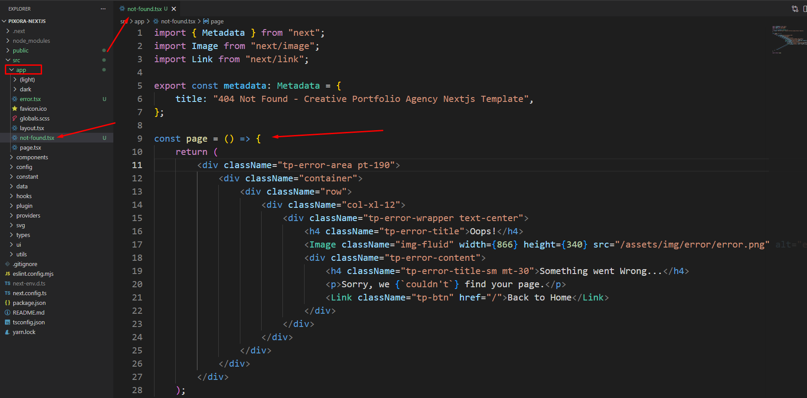
Customize the 404
Customize Portfolio Data
To change Portfolio data and setting you can change by
following this screenshot here.
From the project folder go to
src dataportfolio-projects.tsOpen the data you want to use
Then customize the Portfolio data
Customize the portfolio projects
Customize blog Data
To change blog data and setting you can change by
following this screenshot here.
From the project folder go to
src datablog-data.tsOpen the blog data you want to use
Then customize the blog data
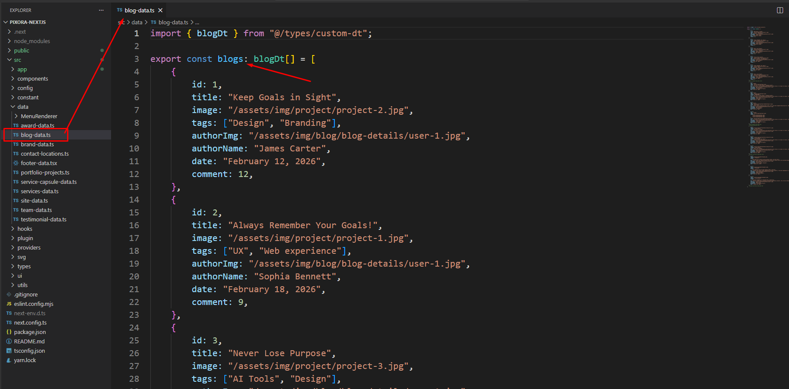
Customize the blog data
Changing template colors
Open the colors.scss file from
public > assets > scss > utils >
_colors.scss
folder with a text-editor.
Change the right-side values of the variables to
change any default colors of your site.
Save your file.
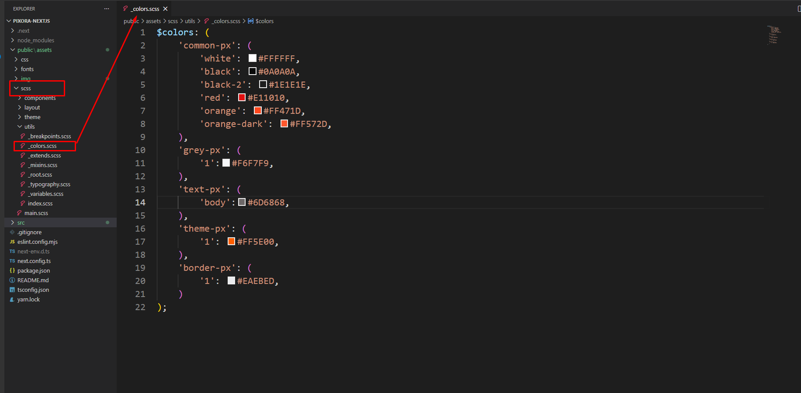
Google Fonts
Pixora uses Google Fonts for clean, modern, and
highly readable typography. You can easily change the
default font family by updating the main layout
configuration.
Open the layout file from the
src > app > layout directory
using your preferred code editor.
Locate the Google Font import and font
configuration, then replace it with your desired
font from Google Fonts.
Save the file and restart the development server to
apply the changes.
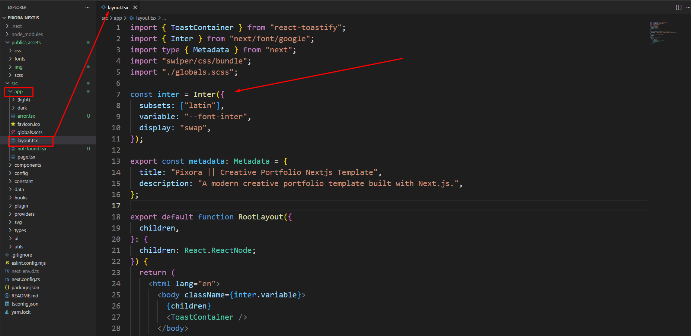
Support
If you face any issue please contact us at
Support Ticket. We provide 15 hours real-time support for our
customers.